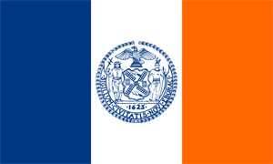

Le drapeau

Le drapeau de New York se compose de bandes verticales bleue,
blanche et orange, de largeur égale, les mêmes couleurs que le
drapeau des Provinces-Unies tel qu'il était utilisé en 1625,
l'année où Manhattan fut colonisée.
En son centre est reproduit, en bleu, le
sceau de la ville. Sur ce dernier
figurent plusieurs éléments symboliques :
- L'aigle est un pygargue à tête
blanche qui représente l'État de New York.
- L'Amérindien évoque les premiers
habitants de la région, tandis que le marin évoque les
colons : leur évocation conjointe suggère l'idée d'une union
entre les deux peuples.
- Les castors font référence à
la Compagnie néerlandaise des Indes occidentales, première
compagnie à venir s'installer à New York.
- Le moulin à vent, les tonneaux de farine et les fleurs
en couronne, représentant l’industrie new yorkaise.
- La devise latine « Sigillum Civitatis Novi Eboraci » qui
signifie : « Le sceau de la ville de New York »
La statue de la Liberté

Située sur la Liberty Island,
au sud de Manhattan à l'embouchure de l'Hudson et à proximité d'Ellis Island.
Son véritable nom est Liberty Enlightening the World,
en français La Liberté éclairant le monde, mais est plus connue sous le nom
de statue de la Liberté (Statue of Liberty).
Pesant 204 tonnes et mesurant 92,9 mètres, elle est construite en
France et offerte par le peuple français, en signe d'amitié entre les
deux nations et pour célébrer le centenaire de la Déclaration
d'indépendance américaine.
La statue fut dévoilée au grand jour le 28 octobre 1886 en présence
du président des États-Unis de l'époque, Grover Cleveland. L'idée est en
général attribuée au juriste et professeur au Collège de
France Édouard de Laboulaye. Le projet fut confié, en 1871,
au sculpteur français Auguste Bartholdi.
En raison de son statut de monument universel, la statue de la Liberté
a été copiée et reproduite à différentes échelles et en divers endroits du
globe. On en compte de nombreuses en France, la plus connue étant
celle située à l'extrémité
de l'île aux Cygnes à la hauteur du pont de Grenelle, près de
l'ancien atelier de Bartholdi, qui est haute de 11,50 m. D'autres
répliques sont également disséminées de part le monde : à Las Vegas,
au Japon, en Espagne, au Kosovo ...